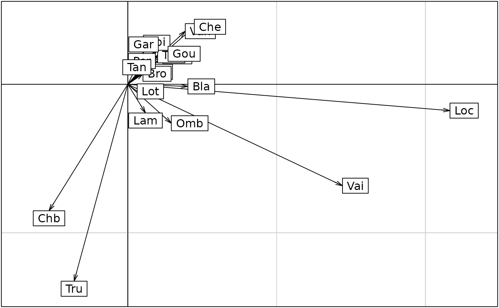

STATIS, a method for analysing K-tables
statis.Rdperforms a STATIS analysis of a ktab object.
Arguments
- X
an object of class 'ktab'
- scannf
a logical value indicating whether the number of kept axes for the compromise should be asked
- nf
if
scannfFALSE, an integer indicating the number of kept axes for the compromise- tol
a tolerance threshold to test whether the distance matrix is Euclidean : an eigenvalue is considered positive if it is larger than
-tol*lambda1wherelambda1is the largest eigenvalue- x
an object of class 'statis'
- xax, yax
the numbers of the x-axis and the y-axis
- option
an integer between 1 and 4, otherwise the 4 components of the plot are dispayed
- ...
further arguments passed to or from other methods
Value
statis returns a list of class 'statis' containing :
- RV
a matrix with the all RV coefficients
- RV.eig
a numeric vector with all the eigenvalues
- RV.coo
a data frame with the array scores
- tab.names
a vector of characters with the names of the arrays
- RV.tabw
a numeric vector with the array weigths
- C.nf
an integer indicating the number of kept axes
- C.rank
an integer indicating the rank of the analysis
- C.li
a data frame with the row coordinates
- C.Co
a data frame with the column coordinates
- C.T4
a data frame with the principal vectors (for each table)
- TL
a data frame with the factors (not used)
- TC
a data frame with the factors for Co
- T4
a data frame with the factors for T4
References
Lavit, C. (1988) Analyse conjointe de tableaux quantitatifs, Masson, Paris.
Lavit, C., Escoufier, Y., Sabatier, R. and Traissac, P. (1994) The ACT (Statis method). Computational Statistics and Data Analysis, 18, 97–119.
Examples
data(jv73)
kta1 <- ktab.within(withinpca(jv73$morpho, jv73$fac.riv, scann = FALSE))
#> Warning: Variables with null variance not standardized.
#> Warning: Variables with null variance not standardized.
#> Warning: Variables with null variance not standardized.
statis1 <- statis(kta1, scann = FALSE)
plot(statis1)
#> Error in s.corcircle(dfxy = statis1$RV.coo, xax = 1, yax = 2, plot = FALSE, storeData = TRUE, pos = -3, psub = list(text = "Interstructure", position = "topleft"), pbackground = list(box = FALSE), plabels = list(cex = 1.25)): non convenient selection for dfxy (can not be converted to dataframe)
dudi1 <- dudi.pca(jv73$poi, scann = FALSE, scal = FALSE)
wit1 <- wca(dudi1, jv73$fac.riv, scann = FALSE)
kta3 <- ktab.within(wit1)
data(jv73)
statis3 <- statis(kta3, scann = FALSE)
plot(statis3)
#> Error in s.corcircle(dfxy = statis3$RV.coo, xax = 1, yax = 2, plot = FALSE, storeData = TRUE, pos = -3, psub = list(text = "Interstructure", position = "topleft"), pbackground = list(box = FALSE), plabels = list(cex = 1.25)): non convenient selection for dfxy (can not be converted to dataframe)
if(adegraphicsLoaded()) {
s.arrow(statis3$C.li, pgrid.text.cex = 0)
kplot(statis3, traj = TRUE, arrow = FALSE, plab.cex = 0, psub.cex = 3, ppoi.cex = 3)
} else {
s.arrow(statis3$C.li, cgrid = 0)
kplot(statis3, traj = TRUE, arrow = FALSE, unique = TRUE,
clab = 0, csub = 3, cpoi = 3)
}
#> Error in s.label(dfxy = statis3$C.Co, xax = 1, yax = 2, facets = statis3$TC[, 1], plot = FALSE, storeData = TRUE, pos = -3, plabels = list( cex = 1.25), unique = TRUE, clab = 0, csub = 3, cpoi = 3): non convenient selection for dfxy (can not be converted to dataframe)

statis3
#> STATIS Analysis
#> class:statis
#> table number: 12
#> row number: 19 total column number: 92
#>
#> **** Interstructure ****
#>
#> eigen values: 5.337 1.525 1.294 1.037 0.6419 ...
#> $RV matrix 12 12 RV coefficients
#> $RV.eig vector 12 eigenvalues
#> $RV.coo data.frame 12 4 array scores
#> $tab.names vector 12 array names
#> $RV.tabw vector 12 array weigths
#>
#> RV coefficient
#> Allaine Audeux Clauge Cuisance Cusancin Dessoubre
#> Allaine 1.0000000
#> Audeux 0.3923156 1.0000000
#> Clauge 0.4142577 0.2568859 1.0000000
#> Cuisance 0.4881191 0.3045202 0.4934249 1.0000000
#> Cusancin 0.6750590 0.4465916 0.2351574 0.5962413 1.0000000
#> Dessoubre 0.4264883 0.7460391 0.2912210 0.4596960 0.4098816 1.00000000
#> Doubs 0.4162722 0.5275275 0.4599651 0.4196404 0.2648507 0.55605542
#> Doulonnes 0.2401718 0.3781006 0.3310817 0.5445763 0.2987118 0.40145726
#> Drugeon 0.3301627 0.0999847 0.5153033 0.2209572 0.1435757 0.09888345
#> Furieuse 0.3844109 0.3291450 0.3259230 0.7768327 0.6693345 0.40898890
#> Lison 0.2312130 0.3968212 0.2895775 0.6310371 0.3982919 0.48144475
#> Loue 0.3872305 0.1128074 0.5192117 0.6487130 0.3069628 0.20311166
#> Doubs Doulonnes Drugeon Furieuse Lison Loue
#> Allaine
#> Audeux
#> Clauge
#> Cuisance
#> Cusancin
#> Dessoubre
#> Doubs 1.0000000
#> Doulonnes 0.2183520 1.0000000
#> Drugeon 0.4214976 0.0671516 1.00000000
#> Furieuse 0.2782714 0.4748992 0.18165914 1.0000000
#> Lison 0.4181009 0.5346002 0.07442131 0.5209446 1.0000000
#> Loue 0.4396741 0.3005171 0.31081167 0.3862660 0.3597613 1
#>
#> **** Compromise ****
#>
#> eigen values: 2.012 0.903 0.5025 0.3003 0.2282 ...
#>
#> $nf: 3 axis-components saved
#> $rank: 19
#> data.frame nrow ncol content
#> $C.li 19 3 row coordinates
#> $C.Co 92 3 column coordinates
#> $C.T4 48 3 principal vectors (each table)
#> $TL 228 2 factors (not used)
#> $TC 92 2 factors for Co
#> $T4 48 2 factors for T4
#>